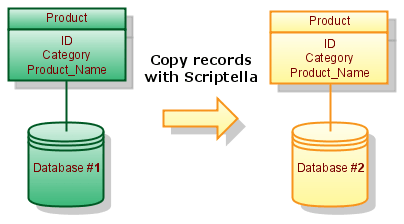

Examples and patterns
Explore database copying, binary data, SQL dialects, Java embedding, and Ant integration. If you are new to Scriptella, start with the guided tutorial.
Database examples
Copy table to another database

Assume Database #1 contains Table Product with id, category and name columns. The following script copies software products from this table to Database #2. Additionally Name column is changed to Product_Name.
etl.xml:
<etl>
<connection id="db1" url="jdbc:database1:sample" user="sa" password="" classpath="external.jar"/>
<connection id="db2" url="jdbc:database2:sample" user="sa" password=""/>
<query connection-id="db1">
SELECT * FROM Product WHERE category='software';
<script connection-id="db2">
INSERT INTO Product(id, category, product_name) values (?id, ?{category}, ?name);
</script>
</query>
</etl>Working with BLOBs
This example creates a table of music tracks. Each track stores the binary content of a local file in its DATA column. Place song1.mp3 and song2.mp3 in the same directory as etl.xml.
etl.xml:
<etl>
<connection driver="h2" url="jdbc:h2:./tracks" user="sa" password="" classpath="h2.jar"/>
<script>
CREATE TABLE Track (
ID INT,
ALBUM_ID INT,
NAME VARCHAR(100),
DATA LONGVARBINARY
);
INSERT INTO Track(id, album_id, name, data) values
(1, 1, 'Song1.mp3', ?{file 'song1.mp3'});
INSERT INTO Track(id, album_id, name, data) values
(2, 2, 'Song2.mp3', ?{file 'song2.mp3'});
</script>
</etl>Supporting several SQL dialects
<dialect> element allows including vendor specific content. The following example creates a database schema for
H2, Oracle, or MySQL depending on the selected driver:
<etl>
<properties>
<include href="etl.properties"/>
</properties>
<connection url="$url" user="$user"
password="$password" classpath="$classpath"/>
<script>
<dialect name="h2">
<include href="h2-schema.sql"/>
</dialect>
<dialect name="oracle">
<include href="oracle-schema.sql"/>
</dialect>
<dialect name="mysql">
<include href="mysql-schema.sql"/>
</dialect>
INSERT INTO Product(id, category, product_name)
VALUES (1, 'ETL', 'Scriptella ETL');
INSERT INTO Product(id, category, product_name)
VALUES (2, 'Development', 'Java application');
</script>
</etl>Executing ETL Files from Java
Put Scriptella and the required drivers on your application classpath, then execute an ETL file with one of these methods:
EtlExecutor.newExecutor(new File("etl.xml")).execute();
EtlExecutor.newExecutor(getClass().getResource("etl.xml")).execute();
EtlExecutor.newExecutor(
servletContext.getResource("/WEB-INF/db/init.etl.xml")).execute();See EtlExecutor Javadoc for more details on how to execute ETL files from Java code.
Use Scriptella as Ant Task
In order to use Scriptella as Ant task you will need the following taskdef declaration:
<taskdef resource="antscriptella.properties" classpath="/path/to/scriptella.jar[;additional_drivers.jar]"/>Running Scriptella files from Ant is simple:
<etl/> <!-- Execute etl.xml file in the current directory -->or
<etl file="path/to/your/file"/> <!-- Execute ETL file from specified location -->